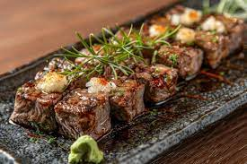

Wagyu Beef Adobo Recipe
Ingredients:
- 1 lb Wagyu beef, cut into chunks
- 1/2 cup soy sauce
- 1/4 cup vinegar
- 1 cup water
- 1 head garlic, minced
- 2 bay leaves
- 1 teaspoon black peppercorns
- 1 tablespoon brown sugar (optional, for balance)
- 2 tablespoons cooking oil
- Salt and pepper to taste
- Steamed rice for serving
Instructions:
- In a bowl, marinate the Wagyu beef with soy sauce, vinegar, garlic, and black peppercorns for at least 30 minutes.
- In a large pan, heat oil over medium heat. Sear the beef until browned on all sides.
- Pour in the marinade, add water and bay leaves, and bring to a boil.
- Lower the heat and simmer for about 45 minutes or until the beef is tender.
- Add brown sugar (if using) and season with salt and pepper to taste.
- Let the sauce reduce to a thick consistency or keep it slightly soupy, depending on your preference.
- Serve hot with steamed rice.
Cooking Tips:
For extra tenderness, let the Wagyu beef simmer on low heat for a longer time to allow the fat to render beautifully.
About Adobo
Adobo is one of the most iconic Filipino dishes, known for its savory and tangy flavors. This version elevates the dish by using premium Wagyu beef, which adds an extra layer of richness and melt-in-your-mouth texture.
Gallery
Check out these mouthwatering Wagyu Beef Adobo photos!

Blog
Discover more about the history of Adobo, different variations, and tips on choosing the best Wagyu beef for this dish!